{kind=link}
01 Walk
LOOP · 2.67s · Locomotion
Frames 1–65 · 0.913 units/s
Original Blender Action
T1 ANIM | 01 Walk47 animation previews, grouped by movement and numbered in viewing order. Choose a group below to jump to it.
47 T1 animations: a four-beat walk, diagonal trot, and heavy gallop; moving jumps, terrain, aiming, evasive leaps, and a forward hull ram. Revised deaths buckle the legs into forward, backward, or staggered slumps. Dance Party uses a stepping groove; Time Warp uses directional hops, a wide squat, and hull thrusts. Artillery recoil now drives the barrel back first, then shoves the hull and compresses the legs.
Game controller setup: Actions use a stationary root at 24 fps. Most previews sample at 8 fps; revised deaths and dances use 12 fps, and recoil uses 24 fps. Supply travel in the controller and use runtime foot IK for actual terrain. Dodge previews show 4.5 units of travel, and the hull ram 5.5, against a 2.6-unit grid. Slopes use a 22-degree reference surface. One-shots hold their final pose before replaying. Time Warp is a quadruped choreography adaptation without song audio.
LOOP · 2.67s · Locomotion
Frames 1–65 · 0.913 units/s
T1 ANIM | 01 WalkLOOP · 1.67s · Locomotion
Frames 1–41 · 2.717 units/s
T1 ANIM | 02 RunLOOP · 1.33s · Locomotion
Frames 1–33 · 5.329 units/s
T1 ANIM | 03 Sprint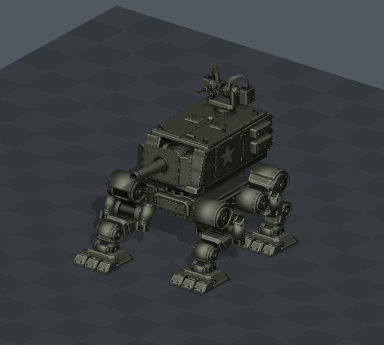
LOOP · 2.67s · Backward locomotion
Frames 1–65 · -0.913 units/s
T1 ANIM | 04 Walk Backward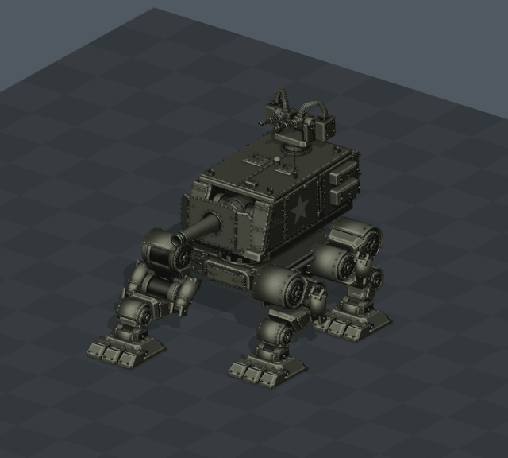
LOOP · 1.67s · Backward locomotion
Frames 1–41 · -2.717 units/s
T1 ANIM | 05 Run Backward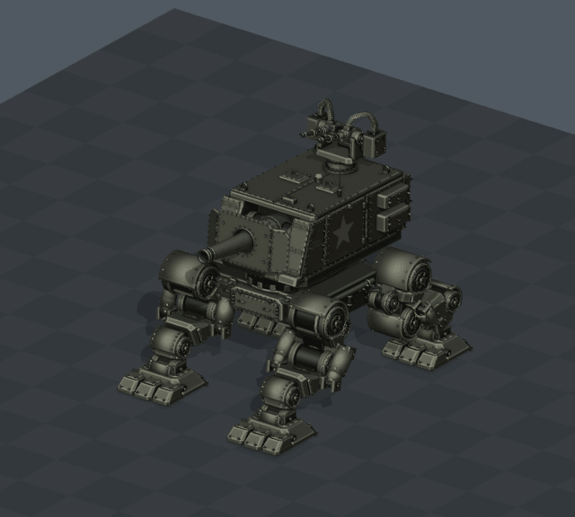
ONE-SHOT · 4.67s · Braking
Frames 1–113 · 0.913 units/s
T1 ANIM | 06 Walk To Stop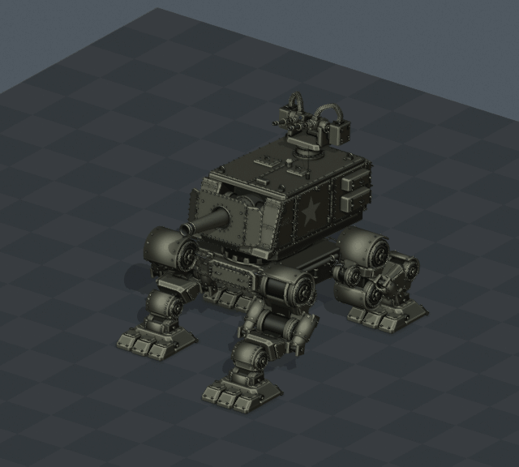
ONE-SHOT · 3.67s · Braking
Frames 1–89 · 2.717 units/s
T1 ANIM | 07 Run To Stop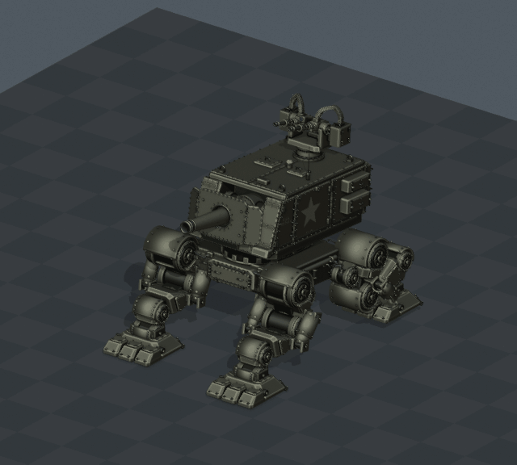
ONE-SHOT · 3.33s · Braking
Frames 1–81 · 5.329 units/s
T1 ANIM | 08 Sprint To StopONE-SHOT · 3.50s · Jump
Frames 1–85 · 0.000 units/s
T1 ANIM | 09 JumpONE-SHOT · 6.17s · Jump transition
Frames 1–149 · 0.913 units/s
T1 ANIM | 10 Walk Into JumpONE-SHOT · 5.17s · Jump transition
Frames 1–125 · 2.717 units/s
T1 ANIM | 11 Run Into JumpONE-SHOT · 4.83s · Jump transition
Frames 1–117 · 5.329 units/s
T1 ANIM | 12 Sprint Into Jump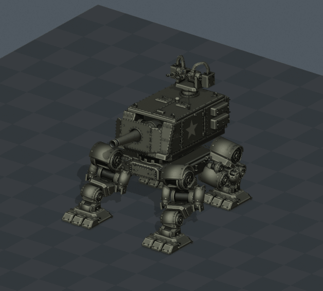
LOOP · 2.67s · Locomotion
Frames 1–65 · 0.913 units/s
T1 ANIM | 13 Side Step Left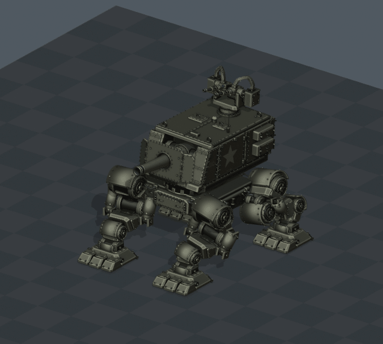
LOOP · 2.67s · Locomotion
Frames 1–65 · 0.913 units/s
T1 ANIM | 14 Side Step Right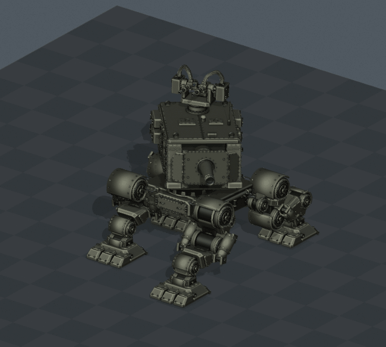
LOOP · 1.67s · Locomotion + fire
Frames 1–41 · 2.717 units/s
T1 ANIM | 15 Strafe Fire Left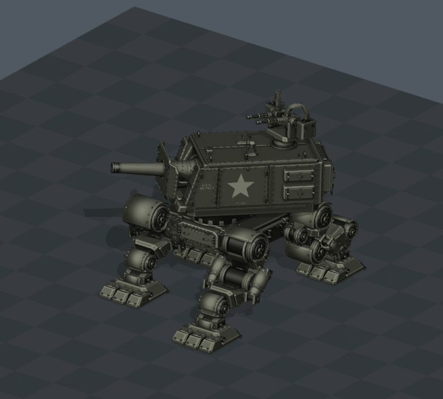
LOOP · 1.67s · Locomotion + fire
Frames 1–41 · 2.717 units/s
T1 ANIM | 16 Strafe Fire Right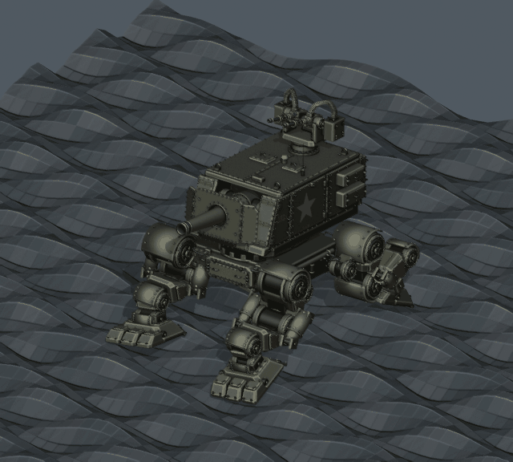
LOOP · 5.33s · Rough terrain
Frames 1–129 · 0.913 units/s
T1 ANIM | 17 Walk Rough Terrain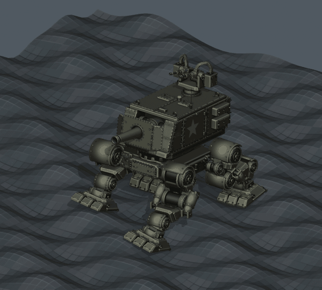
LOOP · 3.33s · Rough terrain
Frames 1–81 · 2.717 units/s
T1 ANIM | 18 Run Rough Terrain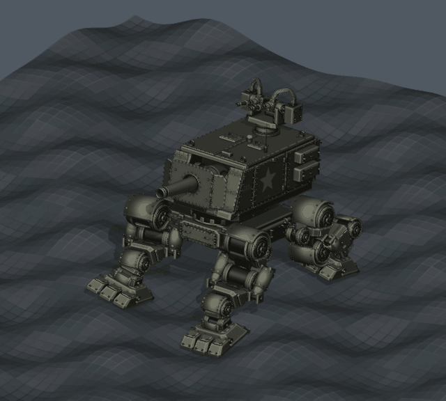
LOOP · 2.67s · Rough terrain
Frames 1–65 · 5.329 units/s
T1 ANIM | 19 Sprint Rough Terrain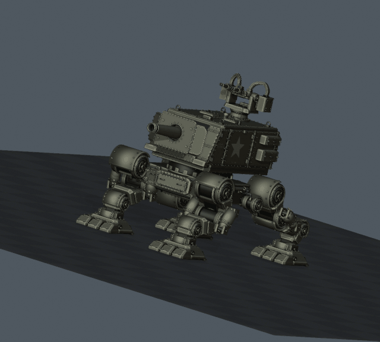
LOOP · 5.33s · Slope locomotion
Frames 1–129 · 0.913 units/s
T1 ANIM | 20 Walk Uphill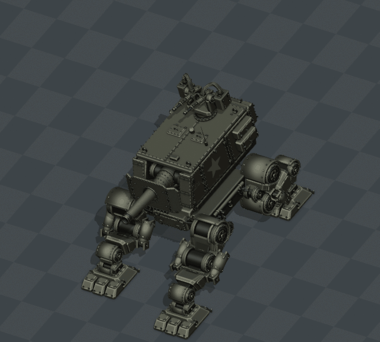
LOOP · 5.33s · Slope locomotion
Frames 1–129 · 0.913 units/s
T1 ANIM | 21 Walk Downhill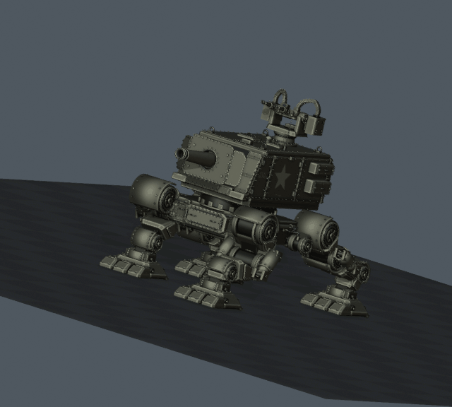
LOOP · 3.33s · Slope locomotion
Frames 1–81 · 2.717 units/s
T1 ANIM | 22 Run Uphill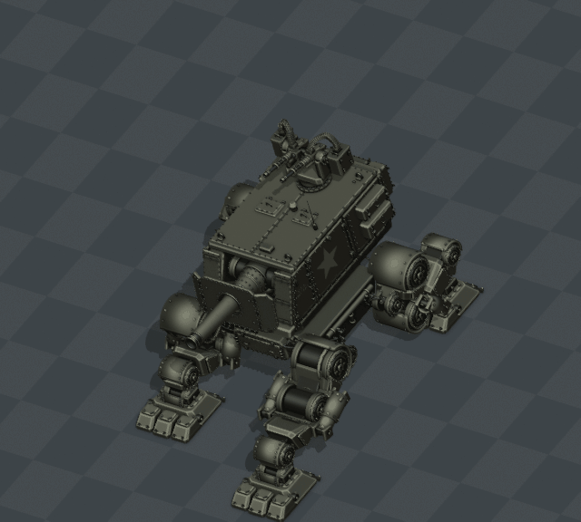
LOOP · 3.33s · Slope locomotion
Frames 1–81 · 2.717 units/s
T1 ANIM | 23 Run Downhill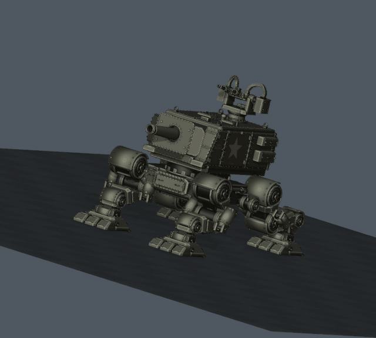
LOOP · 2.67s · Slope locomotion
Frames 1–65 · 5.329 units/s
T1 ANIM | 24 Sprint Uphill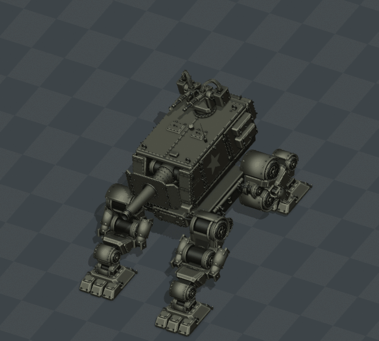
LOOP · 2.67s · Slope locomotion
Frames 1–65 · 5.329 units/s
T1 ANIM | 25 Sprint DownhillLOOP · 4.00s · Upper body additive
Frames 1–97 · 0.000 units/s
T1 ANIM | 26 Hull IdleLOOP · 4.00s · Upper body additive
Frames 1–97 · 0.000 units/s
T1 ANIM | 27 Hull ScanONE-SHOT · 2.50s · Upper body additive
Frames 1–61 · 0.000 units/s
T1 ANIM | 28 Hull Turn LeftONE-SHOT · 2.50s · Upper body additive
Frames 1–61 · 0.000 units/s
T1 ANIM | 29 Hull Turn RightONE-SHOT · 2.50s · Upper body additive
Frames 1–61 · 0.000 units/s
T1 ANIM | 30 Hull Pitch UpONE-SHOT · 2.50s · Upper body additive
Frames 1–61 · 0.000 units/s
T1 ANIM | 31 Hull Pitch DownONE-SHOT · 2.50s · Upper body additive
Frames 1–61 · 0.000 units/s
T1 ANIM | 32 Hull Lean LeftONE-SHOT · 2.50s · Upper body additive
Frames 1–61 · 0.000 units/s
T1 ANIM | 33 Hull Lean RightONE-SHOT · 2.50s · Upper body additive
Frames 1–61 · 0.000 units/s
T1 ANIM | 34 Hull BraceONE-SHOT · 1.67s · Upper body additive
Frames 1–41 · 0.000 units/s
T1 ANIM | 35 Hull RecoilONE-SHOT · 4.67s · Upper body additive
Frames 1–113 · 0.000 units/s
T1 ANIM | 36 Aim Track UpONE-SHOT · 4.67s · Upper body additive
Frames 1–113 · 0.000 units/s
T1 ANIM | 37 Aim Track DownONE-SHOT · 4.67s · Upper body additive
Frames 1–113 · 0.000 units/s
T1 ANIM | 38 Independent Weapon Aim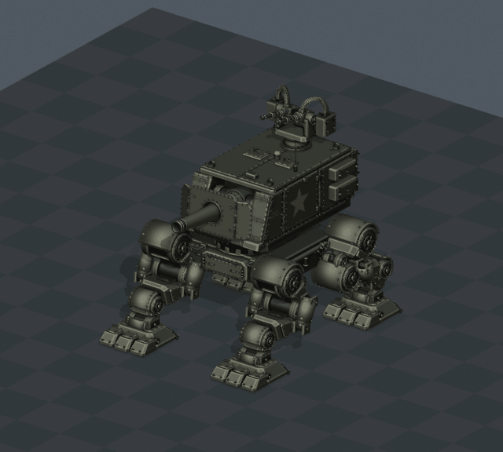
ONE-SHOT · 4.50s · Death
Frames 1–109 · 0.000 units/s
T1 ANIM | 39 Death Forward CollapseONE-SHOT · 4.17s · Death
Frames 1–101 · 0.000 units/s
T1 ANIM | 40 Death Backward Fall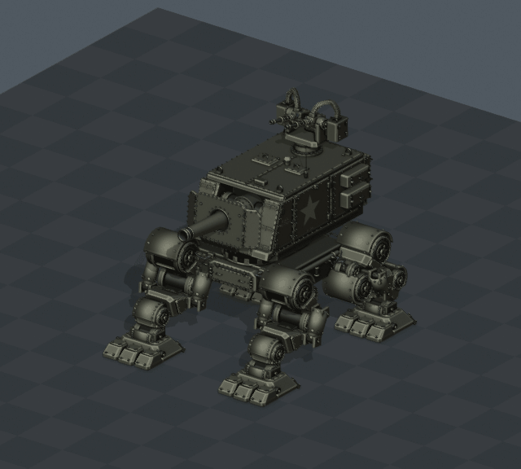
ONE-SHOT · 4.83s · Death
Frames 1–117 · 0.000 units/s
T1 ANIM | 41 Death Side Collapse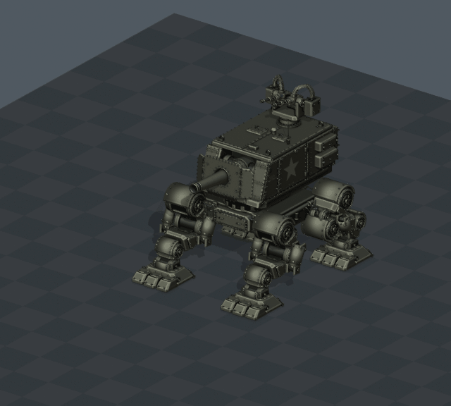
ONE-SHOT · 2.00s · Attack
Frames 1–49 · 0.000 units/s
5.5 units of controller travel shown
T1 ANIM | 42 Forward Hull Ram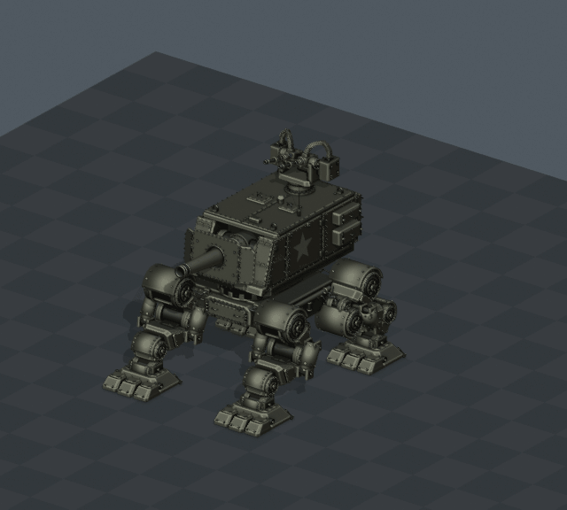
ONE-SHOT · 2.00s · Dodge
Frames 1–49 · 0.000 units/s
4.5 units of controller travel shown
T1 ANIM | 43 Dodge Backward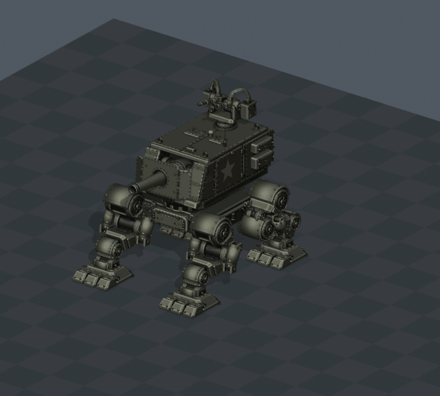
ONE-SHOT · 2.00s · Dodge
Frames 1–49 · 0.000 units/s
4.5 units of controller travel shown
T1 ANIM | 44 Dodge Left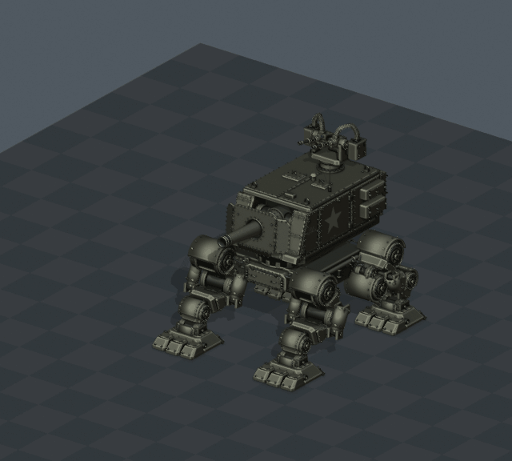
ONE-SHOT · 2.00s · Dodge
Frames 1–49 · 0.000 units/s
4.5 units of controller travel shown
T1 ANIM | 45 Dodge Right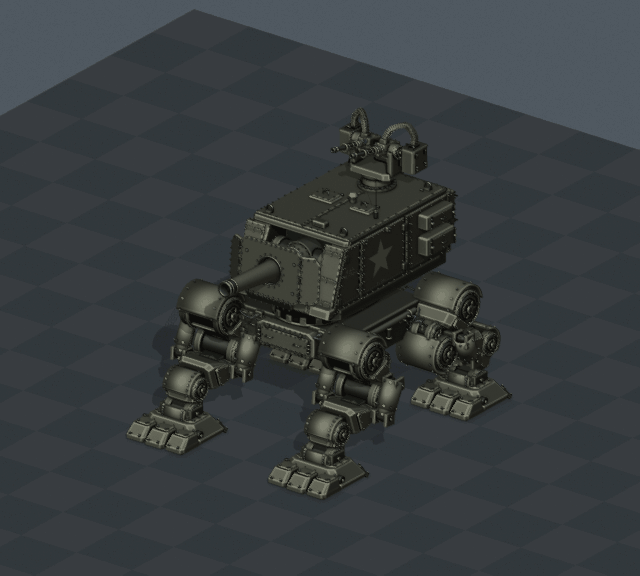
LOOP · 8.00s · Emote
Frames 1–193 · 0.000 units/s
T1 ANIM | 46 Dance PartyLOOP · 11.00s · Emote
Frames 1–265 · 0.000 units/s
T1 ANIM | 47 Time Warp{kind=link}
{kind=link}
{kind=link}
{kind=link}
{kind=link}
{kind=link}
{kind=link}
{kind=link}
{kind=link}
{kind=link}
{kind=link}
{kind=link}
{kind=link}
{kind=link}
{kind=link}
{kind=link}
{kind=link}
{kind=link}
{kind=link}
{kind=link}
{kind=link}
{kind=link}
{kind=link}
{kind=link}
{kind=link}
{kind=link}
{kind=link}
{kind=link}
{kind=link}
{kind=link}
{kind=link}
{kind=link}
{kind=link}
{kind=link}
{kind=link}
{kind=link}
{kind=link}
{kind=link}
{kind=link}
{kind=link}
{kind=link}
{kind=link}
{kind=link}
{kind=link}
{kind=link}
{kind=link}